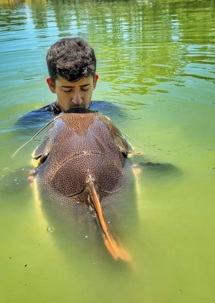
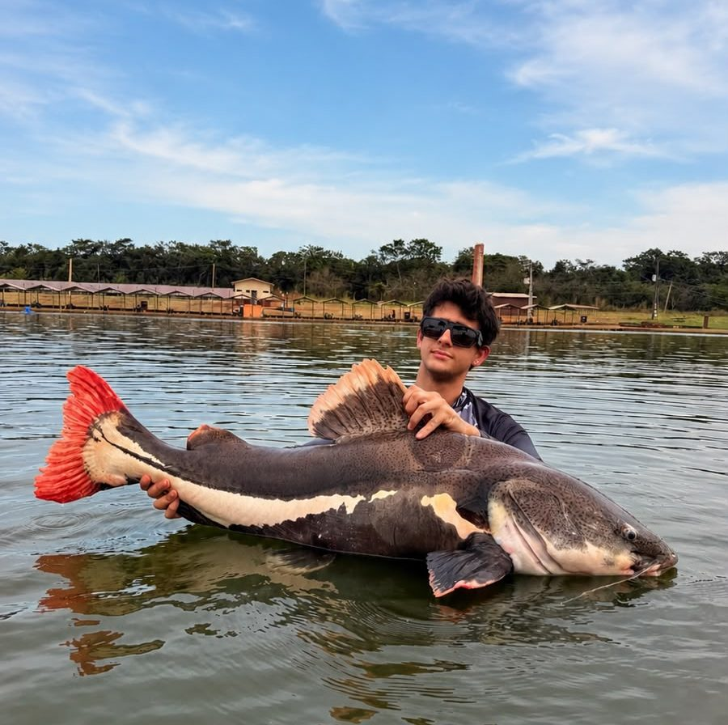
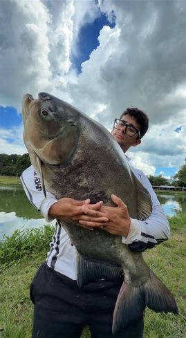

Criador de conteúdo em pesca esportiva com audiência altamente engajada e foco em resultado real para marcas que valorizam autenticidade e autoridade.


Me chamo Matheus Alexandre, conhecido como Dente da Traíra. Comecei na internet em novembro de 2023 sem pretensão comercial — apenas compartilhando a rotina de criação de peixes em casa.
Essa autenticidade atraiu um público apaixonado por pesca esportiva, criando uma audiência extremamente engajada e fiel. Hoje, produzo conteúdo prático, visual e repetível.

Clube Pescar • Luziânia, GO
Curiosidades:
Não se trata só de visibilidade — é impacto.